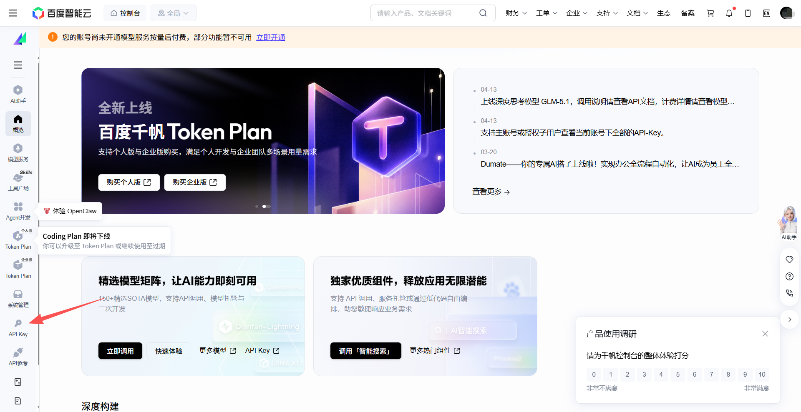
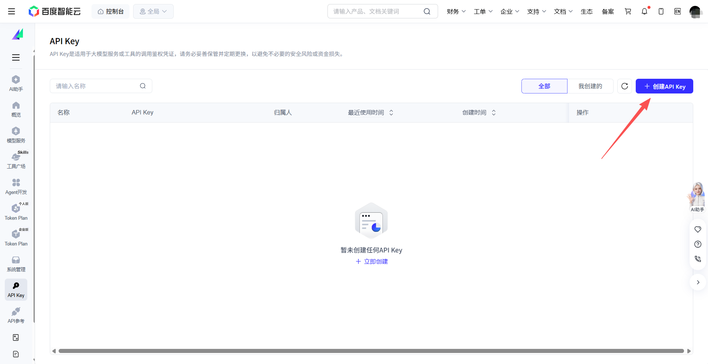
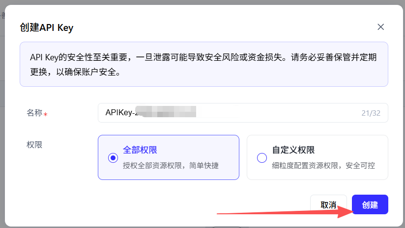
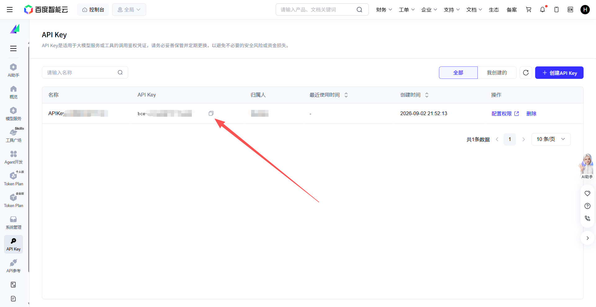

2进入 API Key 管理
登录后进入千帆控制台，在左侧菜单栏找到「API Key」并点击。

3创建 API Key
点击右上角蓝色「创建 API Key」按钮。

4填写信息并创建
名称会自动生成（也可以自己改，如"零号工具"），权限选择「全部权限」，点击右下角「创建」按钮。

5复制 API Key
在列表中找到刚创建的 Key（以 bce-v3/ 开头），点击复制按钮（📋）。

💡 百度千帆 ERNIE-Speed-8K 是4个免费模型中并发能力最强的（QPS=50，比智谱免费版高50倍），适合作为主力免费模型。国内访问速度快，高频率日常使用无压力。